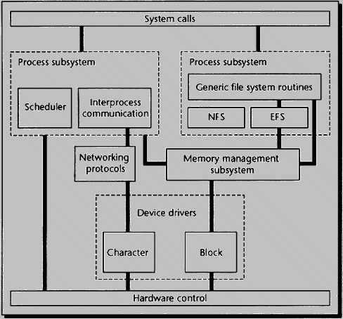

64-bit IRIXTM Architecture and Standards
Table of Contents
1.1.1 X/Open
1.1.2 SVID
1.1.3 MIPS ABI
1.1.4 POSIX
1.1.5 Single UNIX® Specification (SPEC 1170)
1.2.1 X11 and MotifTM
1.2.2 Indigo MagicTM User Environment
1.2.3 Bundled Multimedia Products
1.2.4 OpenGL®
1.2.5 Open InventorTM
1.2.6 ImageVision Library®
1.2.7 IRIS PerformerTM
1.2.8 Shells
1.7.1 Gang Scheduling
1.7.2 Deadline Scheduling
1.7.3 Processor Sets
1.7.4 Processor Cache Affinity
1.8.1 Synchronization Primitives
1.8.2 Lightweight Processes
1.10.1 O32 for 32-bit Applications
1.10.2 64: Full Addressability and MIPS 4 Performance
1.10.3 n32: Speed without Porting
1.12.1 Asynchronous I/O
1.12.2 Memory-Mapped I/O
1.12.3 Direct I/O
1.14.1 Fair Share Scheduler
1.14.2 Checkpoint--Restart
1.14.3 Extended Accounting
1.14.4 Other Batch Scheduling Options
1.17.1 Cadmin
1.17.2 IRIXproTM
1.17.3 Performance Co-PilotTM
1.20.1 COFF Obsoleted
1.20.2 Binary Compatibility between IRIX 5.3 and IRIX 6.2
1.20.3 Object Compatibility between IRIX 6.1 and IRIX 6.2
IRIX 6.2 is the first desktop-to-datacenter, all-platform 64-bit IRIX release. Based on UNIX System V Release 4.1 and conforming fully to major industry standards, IRIX 6.2 includes multiprocessing scalability, network performance, and valuable desktop and filesystem features not available in competitive UNIX offerings. IRIX 6.2 leads the industry in XPG4 Base 95 Profile Branding.
64-bit IRIX preserves customers' software investments with binary compatibility for 32- or 64-bit applications developed on IRIX 5 or IRIX 6. In addition, developers can recompile 32-bit applications to take full advantage of all the most recent MIPS processors.
IRIX 6.2 is supported on Silicon Graphics' Crimson(1), Indy, Indigo R4000, Indigo2, POWER Indigo2, Onyx, POWER Onyx, Challenge, and POWER CHALLENGE systems.
Highlights of the IRIX 6.2 release include:
IRIX 6.2 conforms to the following industry standards:
IRIX 6.2 is among the first operating systems from a major systems vendor to receive the X/Open Base 95 Profile branding from the X/Open Company Ltd. All vendors who claim to support the evolution of UNIX to a single, common specification must achieve this milestone.
IRIX 6.2 provides a substantial subset of the API described in the System V Interface Definition, Issue 3 (SVID3), the defining document for System V Release 4 (SVR4). Compliance with the SVR4 API is tested using a variety of commercial and public domain test packages. One of the most comprehensive of these is the Generic ABI Test Suite (gABI) developed by UNISOFT. The gABI is a comprehensive test of the compliance of the system consisting of more than 7,800 tests.
IRIX 6.2 will be the reference platform for the MIPS ABI 1.2.1 and compliant with the MIPS ABI 1.1. IRIX 5.3 remains the reference platform for the MIPS ABI 1.1. The MIPS ABI is defined in the Black Book (MIPS ABI Conformance Guide), and is determined by the member companies.
Previous releases of IRIX have been selected as the reference platform by the MIPS ABI group. The member companies---all the vendors that offer SVR4 on MIPS processors---agreed that a suitably compiled binary from IRIX would operate correctly on their platforms.
IRIX 6.2 meets the standards established by the POSIX 1003.1 Specification. IRIX has been certified as complying with the FIPS 151-1 interpretation of P1003.1 since IRIX 4.0.5, and as complying with the 1990 version, corresponding to FIPS 151-2, since IRIX 5.2.
IRIX 6.2 incorporates SVR4 commands and utilities that are fully compliant with the POSIX 1003.2 Specifications. Compliance was certified by the X/Open Base 95 Profile branding.
IRIX 6.2 provides many of the interfaces specified by the IEEE POSIX 1003.1b-1993 (formerly 1003.4 Draft 14) standard for real time.
IRIX 6.2 contains kernel enhancements for the support of real-time programming and guaranteed interrupt latencies. POSIX 1003.1c threads (pthreads) the industry standard for multithreaded programming, are supported as part of the REACT/proTM product for IRIX 6.2.
Silicon Graphics provides most of the Application Programming Interfaces (APIs) defined in the X/Open "Single UNIX Specification" UNIX 95 (formerly SPEC 1170). Silicon Graphics is committed to complying fully with this X/Open standard, which will enable software developers to produce products portable to any version of the UNIX operating system that supports the specification.
Silicon Graphics provides a single, advanced user interface across its product line, plus a broad range of standard and optional graphics and visualization development tools.
Leading-edge technology continues to be the focus for the developer user interface libraries for IRIX 6.2. IRIX 6.2 supports Release 6 of the X11 Window System for both client and server and IRIX IM, Silicon Graphics' enhanced version of OSF Motif 1.2.4. The X11R6 libraries and IRIX IM libraries have been updated to support 32-bit and 64-bit addressing. In addition, there is support for CID keyed fonts and the X double buffering extension, and features for font installation and management have been added.
From desktop utilities to digital media applications and collaborative tools, Indigo Magic provides everything necessary for both the novice and the experienced user to take advantage of the power of visual computing.
Indigo Magic offers far more benefits than generic common desktops. Compared to CDE, Indigo Magic offers major value in the areas of system administration, network awareness, and multimedia support. Implemented using the visually-enhanced SGI version of the MotifTM toolkit rendered using the X Window SystemTM , this tightly-integrated environment includes:
A broad spectrum of especially useful multimedia products are bundled with each system. They are listed on the next page:
MediaMail
A comprehensive SMTP/MIME-compliant electronic mail package that helps
you send and receive multimedia messages and manage your mail efficiently.
OpenGL is an industry-standard graphics development environment embraced by more than 30 companies, including the major leaders in the PC and workstations industries. OpenGL is a cross-platform, portable API that enables 2D, 3D, and imaging applications to be developed once for deployment to a variety of hardware platforms with different operating systems and windowing environments. All OpenGL platforms conform to the OpenGL standard, insuring application portability across heterogeneous platforms.
OpenGL includes operations for:
OpenGL provides application developers a consistent graphical interface tuned for each deployed hardware platform.
For Silicon Graphics workstations, OpenGL is bundled with IRIX 6.2. Other OpenGL licensees include:
Open Inventor is an object-oriented 3D graphics toolkit offering a comprehensive solution to interactive graphics programming problems. It presents a programming model based on a 3D scene database that dramatically simplifies graphics programming. Open Inventor offers a rich set of objects that speed up your programming time and extend your 3D programming capabilities beyond OpenGL, X11, and Motif. The objects include:
Open Inventor follows in the footsteps of OpenGL and is on its way to becoming a industry-standard 3D graphics toolkit. Like OpenGL, Open Inventor is a cross-platform, portable API that has been ported to all major PC and workstation platforms. While the Open Inventor developer environment is not bundled with IRIX 6.2, the end-user environment for Open Inventor is being distributed today with IRIX 6.2.
The ImageVision Library (IL) is an extensible, layered, object-oriented toolkit for creating, processing, displaying, and managing images on all Silicon Graphics workstations. The core set of robust image processing functions includes:
The ImageVision Library was designed to reduce complexity for development of image processing applications. It provides a consistent interface regardless of changes or new releases of hardware or foundation software. The ImageVision Library end-user environment is bundled with IRIX 6.2
The IRIS Performer(tm) toolkit gives developers the means to achieve a fast consistent frame rate for applications in the areas of visual simulation, interactive entertainment, and simulation-based design. The IRIS Performer libraries are highly tuned for Indigo2 IMPACT and build on the foundation of OpenGL and IRIX 6.2. IRIS Performer has the intelligence to evaluate underlying hardware and optimize for best performance. The key developer benefits include simplified management of the visual database and maximum performance for scene rendering on all Silicon Graphics workstations. IRIS Performer provides an extensible basis for creating real-time 3D graphics applications in the following fields:
IRIX 6.2 provides the following shells:
All shells are programmable and allow for a tailorable-character user environment.
IRIX 6.2 provides an advanced filesystem with leading-edge features. It also supports a range of alternate filesystems for distributed and standards-based data access.
The IRIX file subsystem supports multiple physical disks and gives them the appearance of a single, logical filesystem with a hierarchical arrangement. Additionally, XFS filesystems may include plexed and non-plexed components.
IRIX 6.2 uses the Virtual Filesystem interface facilitates the inclusion of several filesystem types into IRIX 6.2, including:
Ten years ago, SGI replaced the standard UNIX filesystem with EFS, a higher-performance and higher-capacity filesystem needed by SGI's most demanding customers. EFS increases throughput by supporting 64 KB extents instead of the 8KB or smaller blocks in some UNIX implementations. EFS also implements 8 GB filesystems in 2GB filesystems found on traditional UNIX systems.
IRIX 6.2 still supports EFS for compatibility, but SGI recommends rapid conversion to XFS, one of the most advanced filesystems available from any vendor, and now a standard part of IRIX.
Designed from the ground up, XFS is an advanced 64-bit journaled filesystem with integrated volume management and guaranteed rate I/O. XFS supports files as large as 9 million TB (263-1). With systems that have a 32-bit address space, the filesystem limit is one TB on files and filesystems. Filesystems can grow to 18 TB or one TB with a 32-bit kernel, and individual directories have successfully held 67 million files in internal testing. Aggregate read/write performance exceeds 500 MB per second; single-descriptor performance is over 400 MB per second.
The XFS filesystem has a full range of graphical system administration tools to create, delete, mount, export, and modify filesystems.
XFS uses database journaling technology to provide very fast recovery. No filesystem checking utility is needed---the system quickly references a small log of recently updated filesystem transactions after a system crash. Logging filesystems scale as disks and CPUs are added; traditional UNIX filesystem checking utilities do not.
The XFS filesystem supports logical block sizes ranging from 512 bytes to 1 GB. Filesystem extents, which provide contiguous data within a file, are configurable at file creation time and are multiples of the filesystem block size. The contiguous data control features of XFS greatly increase I/O throughput because there is no delay due to disk seeks or rotational latency in accessing data stored on disk.
Guaranteed rate I/O makes XFS the only filesystem available that allows applications to reserve specific bandwidth to or from the filesystem.
Distributed filesystems simplify the way data is accessed by making remote files appear local. NFS, with an installed base of more than 3 million seats, is the de facto UNIX standard for distributed filesystems.
Until recently, virtually all NFS implementations used the NFS Version 2 protocol (NFSv2). NFSv2 was not designed with today's high-performance networks or large file sizes in mind.
Silicon Graphics implemented NFS Version 3 (NFSv3) for the first time in IRIX 5.3. The Version 3 protocol also allows 64-bit file addressing, which makes it possible to use NFS to transfer files larger than 2 GB over the network for the first time. Since V2 compatibility is preserved in ONC+ (in a more efficient implementation) customers get the best of both worlds: the performance of NFSv3 with the backward-compatibility of NFSv2.
To enhance file sharing performance and reduce network load, NFS clients can use the Cache Filesystem (CFS) function, retaining a copy of frequently accessed remote files locally and updating the cached copy only when the original has been changed.
The Network Information System (NIS) is provided for centralized filesystem management. The automounter service automatically mounts and unmounts NFS filesystems. The NFS locking service, lockd, allows locks to be used with remotely mounted files.
ISO 9660 is a filesystem type used to mount CD-ROM discs in the High Sierra or ISO 9660 formats (with or without the Rock Ridge extensions) formats.
The DOS filesystem driver supports 5.25-inch floppy drives in three standard formats when used with the freestanding SCSI floppy drive. The standard single- and double-density, dual-sided 3.5-inch drive and the 3.5-inch 20.1MB floptical drive are also supported, as are HFS/MAC formats.
swap allows either a file or block device to be used as a swap resource.
The /proc filesystem allows running processes to be accessed and manipulated as files by ordinary system calls, such as open, close, read, write, seek, and ioctl.
The XFS volume manager xlv is a superset of the lv volume manager. It supports striping, concatenation, and, optionally, disk mirroring. The system administrator can make online dynamic changes to volumes, including extending the size of a mounted filesystem, with a full set of graphical system administration tools.
IRIX 6.2 implements the following Internet RFC (Request for Comment) and non-RFC standards, among others:
Table 1-1 RFC Standards
----------------------------------------------------------------------
RFC Protocol Name
----------------------------------------------------------------------
678 Standard File Format
768 UDP User Datagram Protocol
791 IP Internet Protocol
792 ICMP Internet Control Message Protocol
793 TCP Transmission Control Protocol
821 SMTP Simple Mail Transfer Protocol
822 MAIL Format of Electronic Mail Messages
826 ARP Address Resolution Protocol
854 TELNET Telnet Protocol
959 FTP File Transfer Protocol
1014 XDR External Data Representation
1042 IP-IEEE Internet Protocol for IEEE 802
1055 SLIP Serial Line Internet Protocol
1057 Portmapper
1058 RIP Routing Information Protocol
1084 BOOTP BOOTP Protocol
1094 Sun-NFS Network Filesystem Protocol
1119 NTP Network Time Protocol
l122 TCP/IP Internet Hosts Communication Layers
1123 TCP/IP Internet Hosts Communications Layers
1156 MIB Management Information Base
1157 SNMP SNMP
1213 MIB-II Management Information Base II
1247 OSPF Routing protocol (not supported)
1323 TCP-HIPER Transmission Control Protocol: Large windows, etc.
1532 DHCP Dynamic Host Configuration Protocol
1533 DHCP Dynamic Host Configuration Protocol
1534 DHCP Dynamic Host Configuration Protocol
1541 DHCP Dynamic Host Configuration Protocol
----------------------------------------------------------------------
Table 1-2 Non-RFC Standards
------------------------------------------------------------------------------------
Non-RFC Protocol Name
------------------------------------------------------------------------------------
r-commands 4.3 "r-commands" (rsh, rlogin, rcp, rexec
ONC/ONC+ Sun ONC+ 1.2 and Sun ONC 4.2 but not NIS+
NFS V3 NFS V3 Protocol Specification dated 2/16/94
HiPPI HiPPI-PH (X3.183-1991)
HiPPI HiPPI -SC (X3.222-1983)
HiPPI HiPPI FP (X3.210-1992)
HiPPI HiPPI -LE (X3.218-1993)
ATM UNI 3.0 and 3.1 ATM
DCE OSF/DCE 1.1 Core Services (DCE 1.1 with DFS in 1H 1996)
AFS AFS 3.4 via Transarc Corporation (Q1 1996)
------------------------------------------------------------------------------------
The IRIX virtual memory subsystem is based on SVR4 and supports mmap() and mprotect(). The region structure has its roots in SVR3 with major modifications to support MP cache flushing and TLB management. Virtual memory is managed with a classic demand-paged model.
IRIX supports low-cost forks, also known as Copy On Write (COW) or lazy replication. Unique pages are created only when the child process writes to a particular page.
The size of swap partitions can be reduced or augmented on a running system. Applications can swap to NFS partitions, to mirrored partitions, and to regular files. Memory management policies and performance can be tuned using variables documented on the systune man page.
On IRIX 6.2 physical memory can be up to 16 GB, allowing more tasks and/or larger tasks to be in memory simultaneously. A 64-bit user process can grow to a virtual address space of 240 bytes (1 TB) if the physical system has sufficient memory and swap space.
An IRIX process is a collection of resources and a thread of execution within an SGI computer system. The virtual address space of a process, the contents of its user structure and proc table entry, and the values contained in machine registers when the process is running constitute the context of the process.
To support multiple processes, IRIX implements a process-scheduling algorithm that assures a fairly equitable division of processor time among all processes. This algorithm is non-preemptive, that is, the running process cannot be preempted by another process (but can be preempted by the kernel).
The running process can yield to another process "voluntarily," by making a system call (such as an I/O request) that causes it to sleep, in which case another process is selected to run. The running process can also be preempted by the kernel to handle an exception, in which case the process is rescheduled to resume immediately after the exception handler is finished.
The kernel also enforces limits on the amount of time a process can monopolize the processor (time slicing).
While the process management model discussed represents an apparently equitable resource sharing model, multiple CPUs make the task more challenging. Further complexities are added when the scheduler must handle batch and real-time queues in addition to timesharing users.
The scheduler in IRIX 6.2 is designed to handle all these difficult hardware and application environments individually and in combination (recognizing that the goals of timesharing, batch, and real-time are often contradictory).
There are four major classes of priorities in IRIX 6.2. Two of these priority types have multiple subclasses:
Table 1-3 Scheduling Priorities
--------------------------------------
Class Subclasses
--------------------------------------
Kernel
User-mode Real-time Frame Scheduler
Timesharing Gang, General
Background Gang, General
--------------------------------------
Kernel tasks have the highest priority, background processes the lowest. Subclasses within a type can have any priority within the range assigned to that type.
Scheduling options include:
The user can schedule related processes or threads to run as a group. Threads that communicate with each other using locks or semaphores will be assured of running in parallel, avoiding waiting while the receiving or sending process is swapped in and then associated performance penalty.
The system administrator can specify that a particular process will receive a specified allocation of CPU time in any recurring period. The primary beneficiaries are applications where constant delivery of a video or audio stream or constant acquisition of real-time data must be assured. The process can block waiting for its time allocation or yield the processor if the required work is completed before its allocation has been used. This implementation is more efficient and easier to use than the real-time timers and signals used in other UNIX implementations.
The administrator can reserve sets of processors to run specific tasks, partitioning the system into groups of CPUs that run batch jobs, real time, and general timesharing separately. This forces certain classes of users to run applications on a particular set of processors, and can provide assurance to, say, batch users that the optimal number of processors they need to run a parallel batch task will be available when needed.
The scheduler can be instructed to consider the likelihood that data which a process may have fetched into local cache the last time it was running may still be in cache on that processor. Waiting a few microseconds to again run on the original CPU may improve overall throughput by avoiding the penalty of reloading a new cache.
For more information on these schedule models and options, see the Silicon Graphics white papers, Processor Segmentation: A Resource Management Facility for Shared Memory Multiprocessors and Parallel Throughput Performance of IRIX 5.x.
IRIX 6.2 currently supports up to 36 RISC processors on CHALLENGE systems and 18 on POWER CHALLENGE systems, providing unparalleled performance on compute-intensive programs. Silicon Graphics pioneered multiprocessor RISC systems running UNIX. MP versions of IRIX have been available since 1988, so IRIX 6.2 MP support is based on significantly more mature MP technology than is available from other RISC system vendors. The features of Silicon Graphics' multiprocessors allow demonstrable parallel speedups on many technical and commercial applications, further differentiating IRIX.
IRIX employs sophisticated synchronization techniques that allow multiple CPUs to execute in the kernel simultaneously, resulting in a multithreaded kernel. Within the IRIX kernel are more than 5,000 distinct MP-safe entry points. This allows very fine-grained locking; access to an individual data structure is synchronized rather than access to an entire subsystem, reducing the likelihood that Processor B must wait for Processor A to release a locked resource. As a result, IRIX offers exceptional scalability and performance as processors are added.

Figure 1-1 IRIX 6 Kernel Architecture
Silicon Graphics process synchronization primitives, such as spin locks, barriers, and semaphores, are allocated from a shared memory "arena." These are memory-mapped between processes and can permit pointers to be shared. Synchronization primitives are implemented with the MIPS instructions themselves, allowing for much faster synchronization than in traditional System V mechanisms.
sproc is an interface that permits users to create lightweight processes that share the virtual address space (and potentially other attributes) of the parent process. The parent and child both have their own program counter value and stack pointer, but all the text and data space is visible to both processes. This scheme provides one of the basic mechanisms upon which parallel programs can be built.
The IRIS Development Option (IDO) for IRIX 6.2 includes MIPSproTM compilers technology to generate either:
Over the last several releases, key components of the operating system have been progressively enhanced to support 64-bit binaries as well as existing 32-bit binaries. These include (but are not limited to):
The header files listed in Table 4-1 contain structure definitions that have been extended to support 64 bits:
Table 1-4 IRIX System Structures Extended to Support 64 Bits ------------------------------------------------------------- direct.h fcntl.h ftw.h grp/h locale.h math.h netconfig.h netdir.h nl_types.h poll.h pwd.h rpc.h search.h setjmp.h sigaction.h signal.h stddef.h stdio.h stdib.h stropts.h sys/ipc.h sys/msg.h sys/procset.h sys/resource.h sys/sem.h sys/shm.h sys/siginfo.h sys/stat.h sys/statvfs.h sys/time.h sys/times.h sys/tiuser.h termios.h ucontext.h sys/uio.h sys.utime.h sys.utsname.h -------------------------------------------------------------
Include structures have been modified to provide the correct 32- or 64-bit sizes. Since both 32- and 64-bit environments are supported under IRIX 6.2, multiple sets of libraries reside in different directories. 32-bit compilations, targeted at the R4x00 and MIPS 2 ISA, are the default. The library path must be changed for other targets.
Each header file under /usr/include will support both 32-bit and 64-bit compilation. The following directory structure is used for IRIX 6.2 libraries:
Table 1-5 IRIX 6.2 Library Directory Structure(a) ----------------------------------------------------------------------------------- Directories Contents ----------------------------------------------------------------------------------- /usr/lib/*.so 32-bit DSOs /usr/lib/*.a 32-bit static libraries /usr/lib/mips2/*.so 32-bit MIPS 2 DSOs /usr/lib/mips2/*.a 32-bit MIPS 2 static libraries /usr/lib/mips2/nonshared/*.a 32-bit MIPS 2 non-shared libraries /usr/lib32 32-bit MIPS 3 and 4 libraries /usr/lib64 64-bit libraries and tools /usr/lib64/*.so 64-bit DSOs (also mip3 and mips4 subdirectories)) -----------------------------------------------------------------------------------
The IRIX 5.x/SVR4 standard Extended Linking Format (ELF) for object modules has also been extended to 64-bits. ELF-64 is supported in all the tools which work with object modules.
The Dynamic Shared Object (DSO) architecture has been extended to support 64-bit addressing. DSO technology is used to provide upward compatibility between IRIX 5 and IRIX 6, and by dynamically binding applications to the appropriate shared libraries at execution time enables a single "shrink-wrapped" version that can operate without change on a wide variety of MIPS hardware platforms.
Figure 1-2 summarizes changes for 64-bit and the resulting benefit---both 32-bit and 64-bit kernels can dynamically link 32-bit or 64-bit applications as needed.
| Development Environment
| |||||
|---|---|---|---|---|---|
| Network File Service
| |||||
| Local File Service
| |||||
| Libraries and DSO
| |||||
| 32 bit virual Addressing | 64 bit virual Addressing | ||||
Figure 1-2 IRIX 6.2 64-bit Enhancements
Developers can target one of three ABIs, depending on their compatibility and performance goals.
32-bit applications from IRIX 5 generally "just run" on IRIX 6.2.
Applications should be ported to 64-bits if they can benefit from such 64-bit features as:
64-bit logical/arithmetic operations can increase performance on inner loops by a factor of two. Large models used in applications such as computational fluid dynamics or finite element analysis frequently require greater than 2 GB virtual address spaces. Similarly, seismic and reservoir simulation applications in geophysics commonly use data files far larger than 2 GB.
Applications that already exist were often written with one or more target platforms in mind, and that target was often a 32-bit system. As a result, the developer may have consciously or unconsciously "wired in" 32-bit data structures, pointer lengths, or byte alignments in ways that make a port to 64- bits difficult. ISVs and others may also want to keep memory images small (for example) to run on as wide a size range of platforms as possible.
The n32 Software Developers Kit brings two major benefits:
Developers who simply recompile on IRIX 6.2 with the -n32 -mips4 flags set will generate binaries that use all 32 floating-point registers, eight argument registers, and the MADD instruction of the MIPS 4 ISA. With -n32, fundamental data types do not change: all addressing is 32-bit. Please note, however, that R4x00 systems do not support MIPS 4 ISA.
Developers who compile on IRIX 6.2 with the -n32 -mips3 flags set will have binaries that run faster across the entire current SGI product line.
Execution and compilation options for IRIX 6.2 and the platforms they run on are shown in Table 1-6.
| o32 | n32 | -64 | ||||||
|---|---|---|---|---|---|---|---|---|
| MIPS I | MIPS II | MIPS III | MIPS IV | MIPS III | MIPS IV | |||
| Flags | -32 | -n32 -mips3 | -n32 -mips4 | -64 -mips3 | -64 -mips4 | |||
| Indigo, Indigo2, Indy, Crimson | ||||||||
| Execution | ||||||||
| Development | ||||||||
| Indy 5000 | ||||||||
| Execution | ||||||||
| Development | ||||||||
| Challenge, Onyx, Onyx Infinite Reality (R4400) | ||||||||
| Execution | ||||||||
| Development | ||||||||
| POWER Indigo2/POWER Challenge/POWER Onyx R8K and all R10K-based systems | ||||||||
| Execution | ||||||||
| Development | ||||||||
IRIX 6.2 provides components to help developing applications to run in a Silicon Graphics environment. With all necessary execution-only environments needed to run applications on an IRIX 6.2 system, the development products and development libraries are available as layered components.
The base product offering, IRIS Development Option, (IDO), provides the basic tools and libraries needed for developing IRIX applications. These include:
For high-performance computational applications, IRIX delivers the highly-optimized CHALLENGEcomplib for access from either Fortran or C. IRIX 6.2 provides the additional capability of Power Fortran and Power C compiler preprocessors for automatic parallelization of applications for execution on multiprocessor systems.
Additional compiler options are available, including Fortran 77, Fortran 90, and C++, capable of producing 32-or 64-bit code. IRIX 6.2 provides 32-bit support for Pascal, Ada83, and Ada95, as well as providing support to the additional high functionality libraries, such as Open Inventor, Performer, ImageVision, and ViewKit.
IRIX 6.2 also provides access to the ProDev application tools. ProDev WorkShop, an awarding winning X1- based visual development environment, offers unmatched debugging and performance tuning capabilities, including visual debug tools, graphical visualization of structures and arrays, source code analysis and browsing, test coverage, debugging of parallel and single stream codes, performance analysis, memory leak detection, and build analysis. Tightly integrated into a cohesive development environment, ProDev WorkShop provides support for C, C++, Fortran, and Ada95.
RapidApp is a rapid application development tool for creation of media-rich, visual applications for C++. Providing a drag-and-drop mechanism for building applications with objects, RapidApp offers access to X11, Motif, and ViewKit visual components as well as providing access to Open Inventor, and ImageVision Library.
ProDev/Ada provides the most complete development environment for developing Ada95 applications, including extending ProDev WorkShop to understand task based-parallel applications. It provides a validated Ada95 compiler and Ada95 bindings to all SGI libraries.
IRIX 6.2 includes interfaces that can be used in systems demanding the maximum possible I/O performance. These features require source changes, but when used appropriately, the performance gains can be dramatic. These I/O-enhancing features are:
Traditionally, UNIX systems have allowed a given process to have only one I/O operation in progress at a time. This situation forced applications such as database servers that required several concurrent I/O operations to adopt complex, multiprocess architectures. IRIX 6.2 includes support for multiple concurrent I/O operations within a single process. The interfaces comply with the POSIX 1003.1b1993 specification, allowing a user to queue read(2) and write(2) requests to a device, and receive an optional queued signal when the request completes. A process can simultaneously queue a number of requests without having to wait for any of them to complete. Since the interface is standards-compliant, applications using it are portable.
IRIX 6.2 supports the SVR4 interfaces for memory-mapped I/O. Using these interfaces, disk files are visible in the address space of the program, and can be accessed without explicit I/O operations. The kernel can then bring in pages as it would for an executable, using the demand paging features of the virtual memory subsystem.
Direct I/O enables direct transfers between disk and the user address space. It bypasses the kernel buffer cache by using DMA to transfer data directly between the disks and the user address space. Memory-mapped files, by contrast, make the data in the kernel buffer cache directly accessible from the user address space.
Direct I/O requires substantially fewer changes to an existing application than memory-mapped I/O. Using both direct and asynchronous I/O, the program can have complete control of its own I/O operations, yielding performance close to that of raw disk, while retaining the benefits of the filesystem. The interfaces for direct I/O were defined by Silicon Graphics.
IRIX 6.2 includes extensive real-time facilities and interfaces, collectively referred to as REACTTM . These allow the configuration of systems that interact with external events in a fast, guaranteed, and deterministic manner. The key elements of support for real time in IRIX 6.2 include:
These facilities allow IRIX, with its rich feature set and comprehensive applications support, to be used in the most demanding real-time environments. For further information on real-time support in IRIX 6.2, refer to the REACT in IRIX 6.2 Technical Report.
IRIX 6.2 offers features to support unbundled POWER CHALLENGEarrayTM functionality, including the Fair Share SchedulerTM (based on SHARE IITM ), kernel level check-point/restart (based on Hibernator IITM ), and extended accounting, all available from Silicon Graphics. Additional solutions are available from third parties.
The Fair Share scheduler allows system administrators to create a custom compute-resource allocation policy and apply it to an IRIX-based computing environment. Administrators can use Fair Share Scheduling to allocate CPU time, disk space, system memory, connect time, printer pages, and other resources to those users or departments who most need them.
Hibernator II is a kernel-level job execution management tool. It allows system administrators to suspend jobs in mid-execution, restarting them later on the same system or a different machine of the same architecture. Checkpoint-- Restart allows processes to continue across an administrative shutdown or system crash, and can also be used to load balance applications across a number of SGI systems with compatible architectures (IP19 and IP21) and software environments.
IRIX accounting has traditionally been process-oriented. Once activated, information logged for each user login included programs run, CPU and wall clock time, and character and block I/O resources used. IRIX Extended Accounting adds to these capabilities via projects and array sessions. "Projects" allows users to bill multiple projects separately. "Array sessions" group processes together across the nodes of a PC array under a single identifier for unified accounting, job control, and more. Both forms of extended accounting also add monitoring of data commonly tracked in a supercomputing environment, such as swaps, bytes read/written, read/write requests, and time spent waiting on the run queue and for raw and block I/O.
LSF is a load sharing and distributed batch computing product available on SGI platforms from Platform Computing Corporation in Toronto. It supports transparent, heterogeneous, remote execution and can interoperate with remote NQS systems.
IRIX 6.2 incorporates technology originally developed for Trusted IRIX/B for identification, authentication, and auditing. Shadow password support places encrypted user passwords in a file that is inaccessible to non-privileged programs, thwarting brute force attacks on the password data base. Auditing logs security-relevant events, enabling analysis of attempts at unauthorized entry and changes made to system files and configurations. IRIX 6.2 also supports automatic password aging, password quality and reuse controls, and optional login restrictions.
These features are designed to meet the U.S. Department of Defense "Orange Book" C2 level of trust. An optional Trusted IRIX/B 6.2 layered product is available for customers who need a C2 or B1 Level of Trust. Trusted IRIX/B assures a B1 level security environment while providing the features from IRIX 6.2 that are required for compatibility with the other Silicon Graphics products and third-party application software. Multiprocessing, graphics, real time, the X Window System and networking are all included.
The IRIX operating environment supports multibyte character sets and local conventions, and serves as the foundation for the WorldView (TM) family of native language support products. WorldView merges international character sets and local conventions into the Indigo Magic user environment on Silicon Graphics workstations. Users can tailor the desktop to reflect the language interface of their choice from a number of supported languages. Developers can design applications to support multiple localized versions.
Silicon Graphics recognizes that it is essential to provide native language support for its international customers. Documents can be created, edited, and printed in the native language, and many of the user interfaces are localized as well. These include key user interface and system messages. Not only is text localized, but formatting of lists, text, and data--such as date, time, number, and currency--follow native conventions for each country.
Silicon Graphics provides the following native language support products:
For all WorldView products, the Indigo Magic Desktop Interface, Showcase, and printing support are localized. MediaMial and IRIX system messages are localized specifically for German, French, Japanese, and Chinese.
In addition to the native language support, the IRIX 6.2 provides locale support. Different languages and different places have different standard ways of formatting such data as time, dates, and numerical amounts. A database containing such local data formats for a specific language and location is called a locale. A locale specifies both a language and a country. If an application program is written in a way that is independent of any locale - that is, if it is written to use any user-specified locale to provide input and output in the appropriate language and format - the program is said to be internationalized. If a database for a locale has been created to allow an internationalized program to use that locale, the program is said to be localized to that locale.
The locale information for Japanese, Korean, Chinese, and Thai are included as part of the language specific WorldView products.
SGI Locale support (IRIX 6.2)
Locale Name Territory Language cs_CS Czech Republic Czech da Denmark Danish de Germany German de_AT Austria German de_CH Switzerland German el Greece Greek en UK English en_AU Australia English en_CA Canada English en_US U.S.A. English es Spain Spanish es_AR Argentina Spanish es_MX Mexico Spanish fi Finland Finnish fr France French fr_BE Belgium French fr_CA Canada French fr_CH Switzerland French is Iceland Icelandic it Italy Italian it_CH Switzerland Italian ja_JP.EUC Japan Japanese ko_KR.EUC Korea Korean nl Holland Dutch nl_BE Belgium Dutch no Norway Norwegian pl Poland Polish pt Portugal Portuguese pt_BR Brazil Portuguese ru Russia Russian sk Slovakia Slovak sv Sweden Swedish tk Turkey Turkish th_TH Thailand Thai zh_CN.ugn PRC Chinese (Simplified script) zh_TW.ucns Taiwan Chinese (Trad.script)
Note: There are are other cultural parameters in a locale, and that's what we mean by cultural support.Examples:
A new addition for IRIX 6.2 includes the iconv International Codeset Conversion library.
IRIX offers three different levels of administrative tools, aimed at users with various needs and professional experience. Cadmin is a set of simple visual tools for desktop users. IRIXpro is a suite of tools for system administrators. Performance CoPilot is a tool suite for monitoring local and remote network performance.
Silicon Graphics also has developed swmgr, a graphical interface to inst and gendist, to ease software and patch installation, handle installation problems, and provide software version tracking.
A variety of ISVs, including Tivoli, Bull, CosMos/Computer Associates, Legent, and Raxco, sell system and network management solutions for Silicon Graphics platforms.
Cadmin is a simple visual system administration tool for software, performance, volume, and filesystem management. Users can easily add machines, new users, and simple devices, monitor status, and perform other low-level, routine tasks.
IRIXpro is a suite of tools for the professional systems administrator in the technical computing market. IRIXpro provides two applications:
Performance Co-Pilot is a Silicon Graphics tool suite that delivers distributed, integrated performance monitoring and performance management across a range of network platforms, databases, and applications. The product is targeted at performance analysts, developers, and system administrators. Performance Co-Pilot is designed to deliver integrated solutions for Silicon Graphics systems. Optional agents include Oracle, Informix, and POWER CHALLENGEarray.
Users and Administrators have the option of using traditional tape archiving tools (cpio, tar, dump) or using the graphical backup and restore utility that come standard with our systems. We also offer the IRIX NetWorker product that is a full-featured data management tool for multi-system data backup and recovery. NetWorker allows for fully unattended backups with superior performance and scalability.
Data Management API (DMIG) allows implementation of hierarchical storage management software with no kernel modifications as well as high-performance dump programs without requiring "raw" access to the disk and knowledge of filesystem structures.
Every effort has been made to maintain or expand compatibility between IRIX versions.
IRIX 5 and IRIX 6 binaries are produced using the SRV4 Executable and Linking Format (ELF) which replaces the ECOFF object format in IRIX 4 and enables Dynamic Shared Objects. Development and execution of COFF (IRIX 4 and earlier) binaries is not supported on IRIX 6.2. A utility to find/identify COFF-dependent binaries is provided with the release and installed on the system. It may be executed before IRIX 6.2 is installed.
Nearly all binaries built on IRIX 5 can be run under IRIX 6. It may be necessary to recode or recompile to take advantage of IRIX 6 enhancements. There may be rare cases---such as applications that examine internal operating system data structures---in which application code must be recompiled.
Except for n32 C++, user object code is compatible between IRIX 6.1 and IRIX 6.2; however, device drivers and any other applications that access the hardware directly must be recompiled.
Copyright © 1996 Silicon Graphics, Inc. All Rights Reserved.Trademark Information